Date: July 26, 2025
Location: Lakeside Public Library, East County San Diego
On July 26, 2025, ESC Club partnered with Riverview International Academy PTSA to host a vibrant Summer Cultural Bash at the Lakeside Public Library. This special event aimed to promote Chinese culture and traditions while fostering multicultural understanding in the Lakeside community—a region known for its strong Latin heritage.
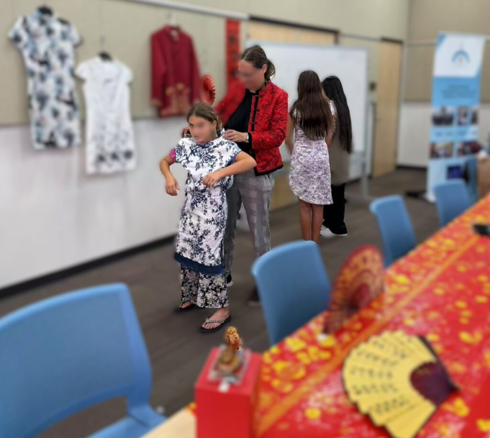
Representing ESC Club were members Alex Tang, Ashelly Fang, Derek Lam, and Andrew Lam, who dedicated their time and creativity to introduce authentic cultural experiences to attendees. The event featured three engaging activity stations, each offering a unique glimpse into Chinese heritage:
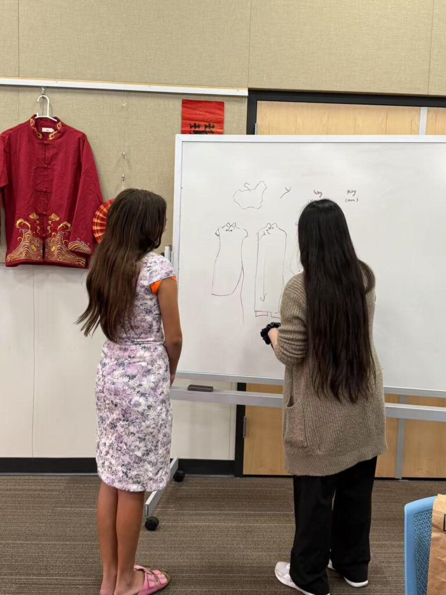
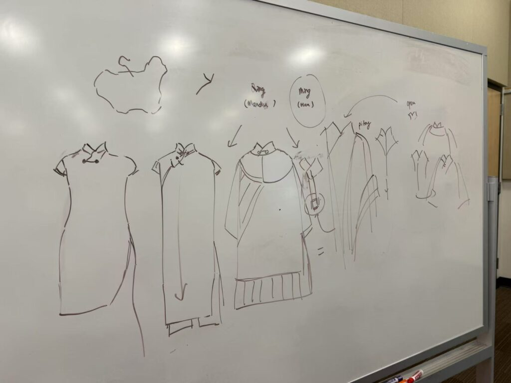
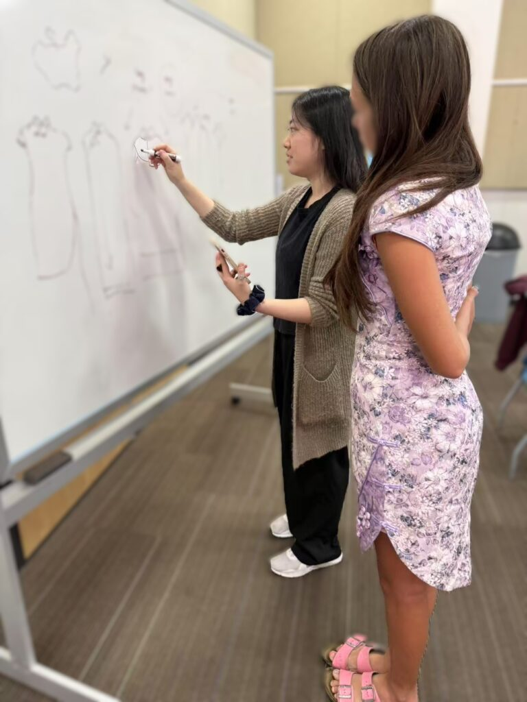
1. Traditional Chinese Dress – Qipao & Feiyufu Try-On
The highlight of the event was the Qipao experience, where ESC Club brought 10 elegant Qipao dresses and two traditional Chinese boy suits (Feiyufu) for visitors to try on. The intricate designs and vibrant colors immediately captured everyone’s attention. One memorable moment was when a young girl convinced her mother to join her in dressing up—they both posed for beautiful, picture-perfect memories that embodied the spirit of cultural exchange.
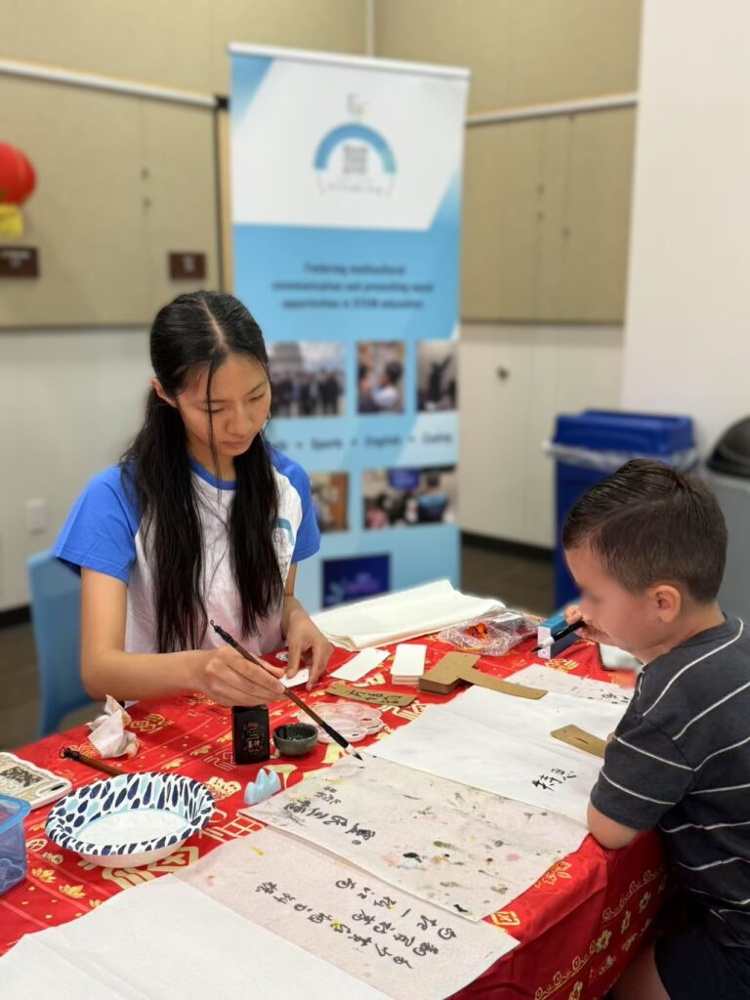
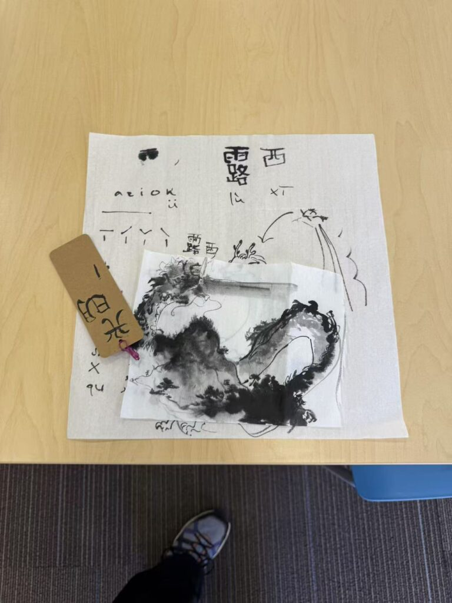
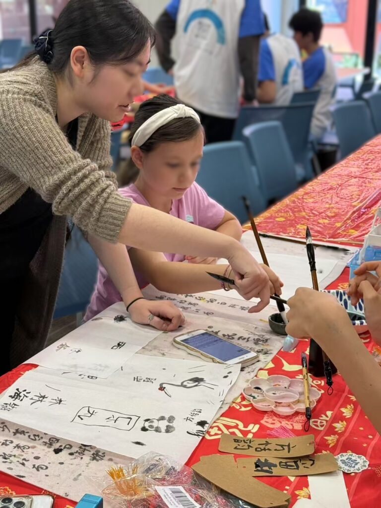
2. Chinese Calligraphy – Brush Writing
Another popular station was the Chinese brush handwriting workshop, where attendees learned the art of traditional calligraphy. Visitors practiced writing Chinese characters with authentic ink brushes, creating personalized name tags to take home. Many participants showed impressive skill for first-timers, leaving with keepsakes they proudly displayed.
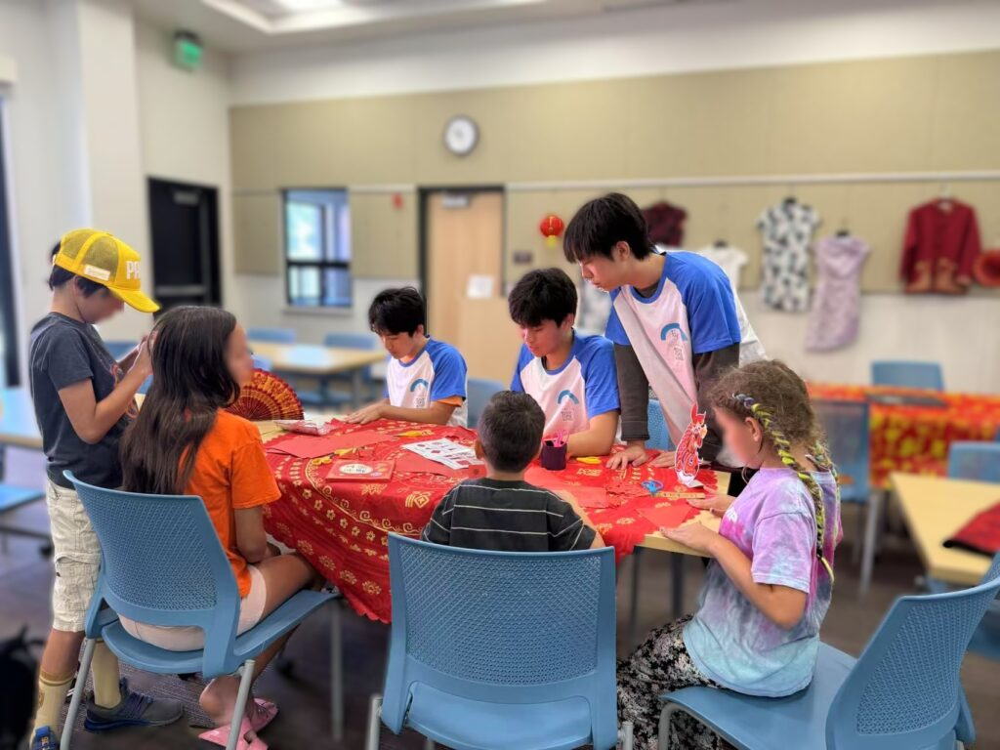
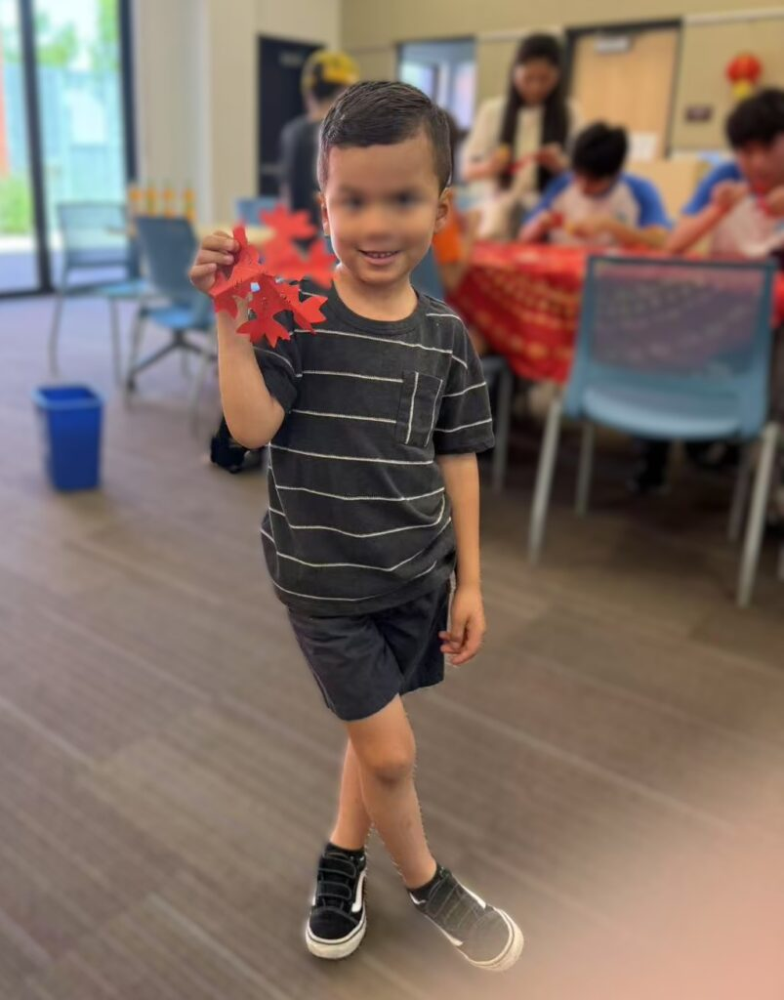
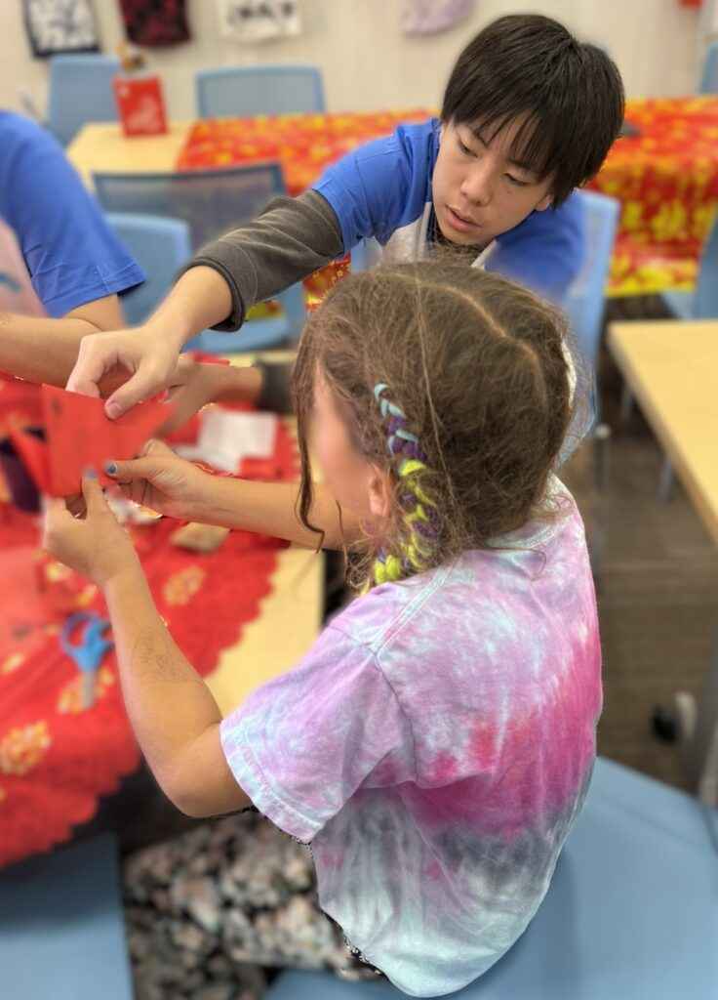
3. Red Paper Cutting – A Classic Folk Art
The final station celebrated the ancient craft of Chinese paper cutting, an activity that delighted children and adults alike. Led by ESC Club’s talented members, participants created intricate red paper designs symbolizing good fortune and creativity. Most children took their handmade crafts home, excited to share their cultural creations with family and friends.
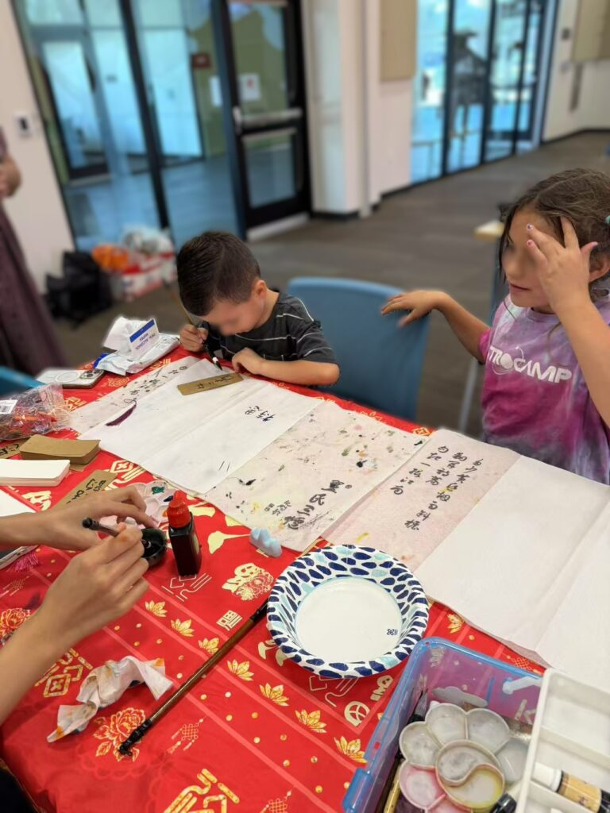
The event ran throughout Saturday morning, drawing families from across the Lakeside community. Library staff expressed their appreciation for the meaningful and well-organized program, praising ESC Club for promoting cultural diversity and community engagement. They extended an open invitation for ESC Club to return regularly for similar multicultural programs in the future.
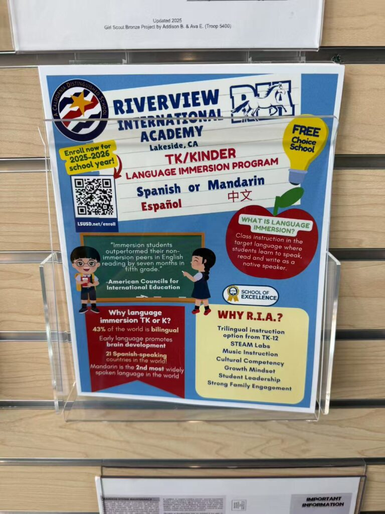
This event reflects ESC Club’s mission to foster cultural exchange, celebrate diversity, and empower youth through education and creativity. Special thanks to Riverview International Academy PTSA and the Lakeside Library team for their collaboration and support.